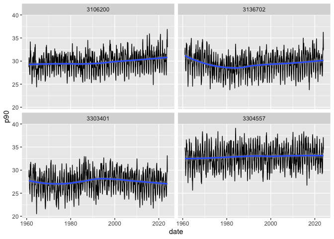

This package offers helper functions to compute climatological normals and aggregated variables for several climate indicators in a tidy approach.
Installation
You can install the development version of climindi from GitHub with:
# install.packages("pak")
pak::pak("rfsaldanha/climindi")Example
The package cames with dataset examples for seven different climate indicators. Let’s use the maximum temperature indicator temp_max_data.
Climatological normals
We can compute climatological monthly normals with the summarise_normal() function.
library(dplyr)
library(lubridate)
library(climindi)
temp_max_normals <- temp_max_data |>
# Identify month
mutate(month = month(date)) |>
# Group by id variable, year and month
group_by(code_muni, month) |>
summarise_normal(date_var = date, value_var = value, year_start = 1961, year_end = 1990) |>
ungroup()On this example, the function summarise_normal() will receive the grouped data by municipality id and month, and compute the climatological monthly normal considering the values between 1961 and 1990.
temp_max_normals
#> # A tibble: 48 × 5
#> code_muni month normal_mean normal_p10 normal_p90
#> <int> <dbl> <dbl> <dbl> <dbl>
#> 1 3106200 1 27.9 24.0 31.2
#> 2 3106200 2 28.5 25.5 30.9
#> 3 3106200 3 28.3 25.4 30.9
#> 4 3106200 4 27.2 24.6 29.6
#> 5 3106200 5 25.8 22.8 28.3
#> 6 3106200 6 24.7 21.9 27.3
#> 7 3106200 7 24.4 20.9 27.2
#> 8 3106200 8 26.1 22.2 29.8
#> 9 3106200 9 27.1 22.6 31.1
#> 10 3106200 10 27.5 23.0 31.5
#> # ℹ 38 more rowsIndicators
With the summarize functions available at the package, it is possible to compute several aggregated indicators, and some of them use the normals computed above. Thus, supply the data using the same groups structures of the normals.
indi_temp_max <- temp_max_data |>
# Identify year
mutate(year = year(date)) |>
# Identify month
mutate(month = month(date)) |>
# Group by id variable, year and month
group_by(code_muni, year, month) |>
# Compute maximum temperature indicators
summarise_temp_max(value_var = value, normals_df = temp_max_normals) |>
# Ungroup
ungroup()
indi_temp_max
#> # A tibble: 3,024 × 24
#> code_muni year month count normal_mean normal_p10 normal_p90 mean median
#> <int> <dbl> <dbl> <int> <dbl> <dbl> <dbl> <dbl> <dbl>
#> 1 3106200 1961 1 31 27.9 24.0 31.2 25.9 26.1
#> 2 3106200 1961 2 28 28.5 25.5 30.9 28.2 28.7
#> 3 3106200 1961 3 31 28.3 25.4 30.9 28.3 28.9
#> 4 3106200 1961 4 30 27.2 24.6 29.6 28.1 28.1
#> 5 3106200 1961 5 31 25.8 22.8 28.3 25.5 25.5
#> 6 3106200 1961 6 30 24.7 21.9 27.3 24.8 24.9
#> 7 3106200 1961 7 31 24.4 20.9 27.2 25.2 25.1
#> 8 3106200 1961 8 31 26.1 22.2 29.8 27.8 27.7
#> 9 3106200 1961 9 30 27.1 22.6 31.1 31.8 32.7
#> 10 3106200 1961 10 31 27.5 23.0 31.5 28.4 29.3
#> # ℹ 3,014 more rows
#> # ℹ 15 more variables: sd <dbl>, se <dbl>, max <dbl>, min <dbl>, p10 <dbl>,
#> # p25 <dbl>, p75 <dbl>, p90 <dbl>, heat_waves_3d <int>, heat_waves_5d <int>,
#> # hot_days <int>, t_25 <int>, t_30 <int>, t_35 <int>, t_40 <int>The function summarise_temp_max() computes a total of 19 indicators. Let’s plot one of them.
library(ggplot2)
indi_temp_max |>
mutate(date = as.Date(paste0(year,"-",month,"-01"))) |>
ggplot(aes(x = date, y = p90)) +
geom_line(stat = "identity") +
geom_smooth() +
facet_wrap(~ code_muni)
#> `geom_smooth()` using method = 'loess' and formula = 'y ~ x'